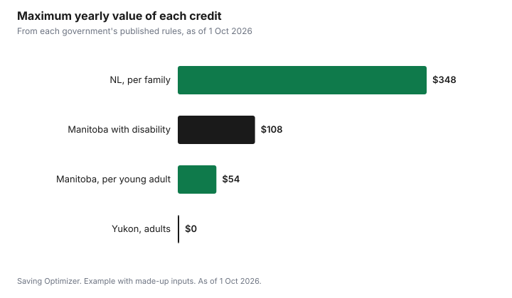

Sports · Canada
Physical Activity Tax Credits for Adults: Which Provinces Still Offer Them
Only a few places in Canada give adults a tax credit for sports and fitness fees. Newfoundland and Labrador has the broadest: a refundable Physical Activity Tax Credit on up to $2,000 of eligible fees per family, including adults, at a rate of 17.4%, worth up to $348 a year. Manitoba's Fitness Tax Credit covers children and young adults up to age 24, on up to $500 each, worth up to $54. Yukon's fitness credit is for children only. Elsewhere, check your province's tax package each year rather than assuming a credit exists.
Key takeaways
- Newfoundland and Labrador: refundable credit on up to $2,000 per family, rate 17.4%, maximum $348.
- NL counts you, your spouse or partner and dependent children under 18 in one family limit.
- Manitoba: non-refundable credit on up to $500 per child or young adult up to 24; benefit up to $54.
- Yukon: children's fitness credit for children under 16 (18 with the disability tax credit); no adult credit.
- Programs must involve significant physical activity; food, travel and lodging are excluded.
- Keep receipts in case the CRA asks.
Newfoundland and Labrador ($2,000 per family)
Newfoundland and Labrador's Finance department says the Physical Activity Tax Credit is a refundable tax credit on up to $2,000 per family, claimable on your personal return beginning with the 2021 tax year. The family limit covers you, your spouse or common-law partner and dependent children under 18. Budget 2023 doubled the rate from 8.7% to 17.4% starting with the 2023 tax year. Because the credit is refundable, it can reduce tax payable or be refunded if you owe no tax.
| Item | Rule |
|---|---|
| Type | Refundable |
| Limit | Lesser of $2,000 per family or eligible fees |
| Family | You, spouse or partner, dependent children under 18 |
| Rate | 17.4% since the 2023 tax year |
| Maximum value | $348 (17.4% of $2,000) |
| First year | 2021 tax year |
The province gives two examples. A person with $1,500 of eligible fees gets 17.4% of $1,500, or $261. A person with $3,000 of fees claims the $2,000 maximum for a credit of $348. Either spouse may claim, but the total cannot exceed what one person could claim; if both claim the same amounts, the CRA decides the split.
What counts
Eligible fees are registration in an eligible program of physical activity or membership in an eligible organization. The program must require significant physical activity that contributes to cardiorespiratory endurance plus muscular strength, muscular endurance, flexibility or balance. The province names golf, horseback riding, sailing and bowling as eligible alongside obviously strenuous games like hockey and soccer. Activities where riding a motorized vehicle is essential do not qualify. Fees can include administration, instruction, facility rental, uniforms and equipment, but not accommodation, travel, food or beverages. A club membership is fully eligible if more than 50% of the organization's activities involve significant physical activity; otherwise a prorated receipt can be issued. Fees must be reduced by any reimbursement, and amounts deducted as child care expenses do not count.
Manitoba (young adults)
Manitoba's Fitness Tax Credit covers fitness activities for children under 16 and young adults aged 16 through 24. Up to $500 of eligible fees can be claimed per child or young adult, according to the province's personal tax credits page, which lists the same amount for 2024 and 2025. The credit is non-refundable and worth up to $54 per person. An additional $54 may be available for a child or young adult with a disability if at least $100 is spent, for a maximum of $108.
| Item | Rule |
|---|---|
| Ages | Children under 16 and young adults 16 through 24 |
| Limit | $500 of eligible fees per person ($1,000 with disability) |
| Type | Non-refundable |
| Maximum benefit | $54; $108 with disability and at least $100 spent |
| Who claims, under 18 | The child or young adult, or their parent |
| Who claims, 18 to 24 | The young adult, or their spouse or common-law partner |
Manitoba's eligible costs are similar to Newfoundland and Labrador's: registration or membership fees, including administration, instruction, facility rental and required uniforms and equipment, but not accommodation, travel, food or beverages. For an adult over 24 in Manitoba, there is no fitness credit on that page.
Yukon
The CRA's Yukon tax package for 2025 describes a children's fitness tax credit: up to $1,000 per child for eligible fitness fees, for a child under 16 at the start of the year (under 18 if eligible for the disability tax credit), with a refundable part of 6.4% of eligible fees. It does not cover adults. For children's credits in other provinces, see children's activity tax credits by province.
| Place | Adults 25+ | Young adults to 24 | Children |
|---|---|---|---|
| Newfoundland and Labrador | Yes, within $2,000 family limit | Yes | Yes, under 18 in family limit |
| Manitoba | No | Yes, up to 24 | Yes |
| Yukon | No | No | Yes, under 16 (18 with DTC) |
| Other provinces | Check that year's package | Check | Check |
Receipts
Keep receipts for every fee you claim. Newfoundland and Labrador says you must keep receipts to support your claim in case the CRA asks, and that organizations are in the best position to decide whether their programs qualify. Ask your gym, club or league for a receipt that shows the participant's name, the program, dates and the amount paid. If a fee covers more than one thing, such as a camp with meals, ask for the eligible amount to be shown separately.
- Ask for receipts when you register, not at tax time.
- Check the receipt shows the participant, program, dates and amount.
- Subtract any reimbursement, such as an employer wellness benefit.
- Keep receipts with your tax records.
Claim
These are provincial credits claimed on your personal income tax return through the provincial forms for the province where you lived on 31 December. Tax software will ask for the amounts. If you and your spouse or partner both have fees, decide who claims within the limits.
Example with made-up inputs: a Newfoundland and Labrador family
These numbers are an example with made-up inputs, using the province's 17.4% rate and $2,000 family limit. A couple pays $700 for one adult's gym membership, $450 for the other's running club and $1,100 for two children's hockey registrations, $2,250 in total. They claim the $2,000 limit for a credit of $348. If they had only the gym and running club fees, $1,150, the credit would be $200.10.
| Item | Amount |
|---|---|
| Adult gym membership | $700 |
| Adult running club | $450 |
| Children's hockey | $1,100 |
| Total fees | $2,250 |
| Claimable (family limit) | $2,000 |
| Credit at 17.4% | $348 |

Sources
- Government of Newfoundland and Labrador, Finance, Physical Activity Tax Credit, gov.nl.ca, as of 1 Oct 2026. Refundable credit, $2,000 family limit, 17.4% rate from 2023, eligibility, examples, receipts.
- Province of Manitoba, Finance, Personal Tax Credits, gov.mb.ca, as of 1 Oct 2026. Fitness Tax Credit ages, $500 limit, $54 benefit, disability amount, who claims, eligible costs; 2024 and 2025 amounts.
- Canada Revenue Agency, Yukon tax information for 2025 (5011-pc), canada.ca (archived copy captured 10 Jun 2026), as of 1 Oct 2026. Children's fitness tax credit, $1,000 per child, age rules, 6.4% refundable part.
- The fees and family in the example are an example with made-up inputs.
Frequently asked questions
Which provinces have a physical activity tax credit for adults?
Newfoundland and Labrador has a refundable credit that covers adults within a $2,000 family limit. Manitoba's Fitness Tax Credit covers young adults up to age 24. Yukon's credit is for children only.
How much is the Newfoundland and Labrador Physical Activity Tax Credit?
It is 17.4% of up to $2,000 of eligible fees per family since the 2023 tax year, so up to $348, and it is refundable.
Can adults claim Manitoba's Fitness Tax Credit?
Only young adults up to age 24. Manitoba allows up to $500 of eligible fees per child or young adult, for a non-refundable benefit of up to $54.
What fees qualify for a physical activity tax credit?
Registration or membership fees for programs requiring significant physical activity, including instruction, facility rental and required equipment, but not travel, accommodation, food or beverages.
Do I need receipts?
Yes. Keep receipts showing the participant, program and amount in case the CRA asks.
Researched and drafted with AI assistance and fact-checked against official Canadian sources. How we create content.
Disclosure: Saving Optimizer may earn a commission if a partner link is added later, such as a tax software offer type. No partnership is claimed on this page. Education only, not tax advice.